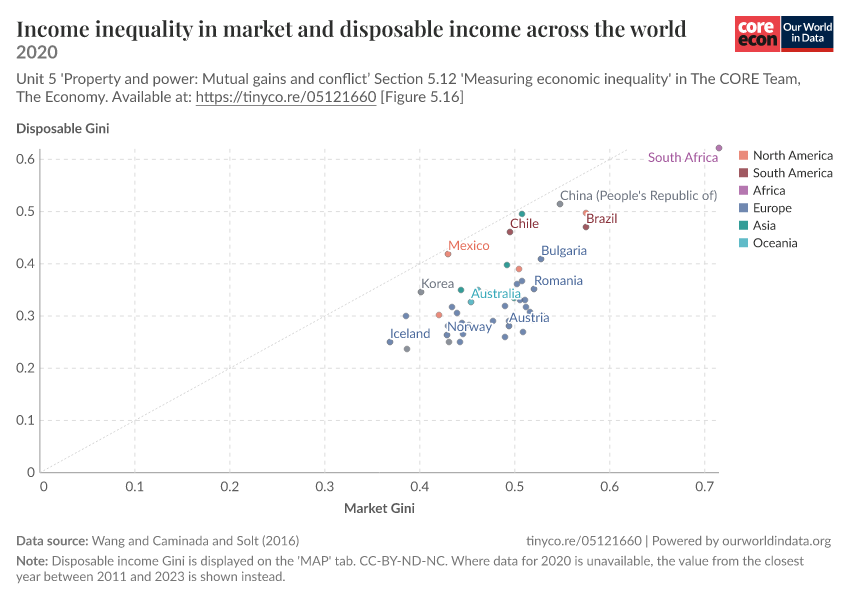

Intended message
Taxes and social transfers reduce measured income inequality in most countries, but the size of that reduction differs substantially across countries.
Visualization Critique and Redesign
A critique and D3.js redesign of an Our World in Data chart comparing income inequality before and after taxes and transfers.
01

Taxes and social transfers reduce measured income inequality in most countries, but the size of that reduction differs substantially across countries.
Students, policy readers, and members of the public who want to compare inequality before and after government redistribution.
Compare countries, identify high-inequality cases, estimate the reduction between the two Gini measures, and notice regional patterns or outliers.
02
Both axes show Gini coefficients with comparable limits. The diagonal reference line gives a meaningful baseline: a country on the line would show no difference between market and disposable income inequality.
Position efficiently shows that every plotted country lies below the equality line. South Africa also stands out immediately as an unusually high-inequality case.
The policy-relevant quantity is the reduction from market to disposable Gini. Readers must estimate diagonal distance from the reference line, a less precise task than comparing aligned positions or lengths.
Only a subset of points receives a label. Overlap near the center makes identification difficult, and color requires repeated movement between points and a distant legend.
Six categorical colors emphasize geography even though the main message concerns redistribution. Similar colors for North and South America are also difficult to distinguish at the small point size.
The title says 2020, while most observations come from earlier years. A note explains this at the bottom, but viewers may interpret the display as a synchronized snapshot.
03
Each row uses aligned positions to show inequality before and after redistribution. The connecting line directly encodes the reduction.
Sorted by largest reduction.
Market Gini measures inequality before taxes and transfers; disposable Gini measures inequality after them. A longer connector indicates a larger absolute reduction. Country years vary from 2011 to 2020 and appear in the tooltip.
04
The redesign places both measurements on one horizontal scale for every country. The line between them makes the reduction a visible length, addressing the difficult diagonal-distance judgment in the original.
Country names align in a dedicated column, eliminating selective labels and overlap. Sorting by reduction, either Gini measure, or name supports distinct comparison tasks.
A restrained two-color encoding distinguishes before and after values. Region remains available as a filter, so geography can be explored without competing with the main message.
The tooltip reports each country's actual year, and the chart note states the full range. This makes the asynchronous data limitation visible before users draw temporal conclusions.
05
The selected visualization is Our World in Data's Income inequality in market and disposable income across the world, adapted from Figure 5.16 of the CORE Team's The Economy and based on Wang, Caminada, and Solt (2016). It plots market Gini on the horizontal axis and disposable Gini on the vertical axis. Market income is measured before taxes and social transfers, while disposable income reflects resources after those interventions. The intended message is that redistribution lowers inequality, although the magnitude varies by country. The likely audience includes students, policy readers, and the general public. Their main tasks are to compare countries, locate high-inequality cases, estimate the redistributive reduction, and identify broad regional patterns.
The original has two important strengths. First, both axes represent comparable Gini coefficients and use similar ranges. The diagonal equality line supplies a meaningful reference: points on it would indicate no change between the two measures. Second, the two-dimensional position provides an efficient overview. Every point falls below the equality line, making the general reduction visible, while South Africa is immediately recognizable as an extreme high-inequality case.
However, the design makes the central comparison harder than necessary. The meaningful quantity is the difference between market and disposable Gini, but viewers must judge a point's diagonal distance from the equality line. People compare positions on a common axis more accurately than unaligned distances, so ranking countries by redistribution is difficult. The labeling strategy creates a second problem. Only selected countries are named, many points cluster around the center, and users cannot identify every observation from the static chart. Third, color primarily encodes world region. That may support a secondary geographic question, but it competes with the before-and-after comparison; some hues are also similar at the small mark size. Finally, the title presents the chart as 2020 even though the CSV contains country observations from 2011 through 2020. The footnote discloses this, but its position and density make the limitation easy to miss.
The redesign uses a horizontal dumbbell plot. Each country occupies one row, with a dark point for market Gini, a teal point for disposable Gini, and a connecting line whose length equals the absolute reduction. This directly addresses the first weakness by turning diagonal distance into length along a shared scale. Countries are labeled consistently and can be sorted by reduction, either Gini measure, or alphabetically. Search and region filtering further reduce the cost of locating a country. These choices address overlap and selective labeling without adding decorative interaction.
Color now distinguishes the two measures rather than regions. Region remains available as a filter, preserving that analytical task while giving the primary comparison greater visual priority. A tooltip provides exact values, the absolute and percentage reduction, region, and observation year. The year range also appears below the chart so viewers encounter the comparability limitation in the same area as the data. A value-label toggle allows precise reading while keeping the default display uncluttered.
The redesigned view makes it easier to rank countries by redistribution, compare before-and-after values, locate a named country, and retrieve its actual data year. It gives up the compact two-dimensional overview and makes correlation between market and disposable Gini less visually immediate. The chart is also taller because every country receives a row. These are reasonable trade-offs because the project's primary task is comparison, not estimating correlation. A remaining limitation is that the data combine different years and measure absolute Gini changes without establishing causality. Taxes and transfers contribute to the difference, but this descriptive chart alone cannot evaluate individual policies.